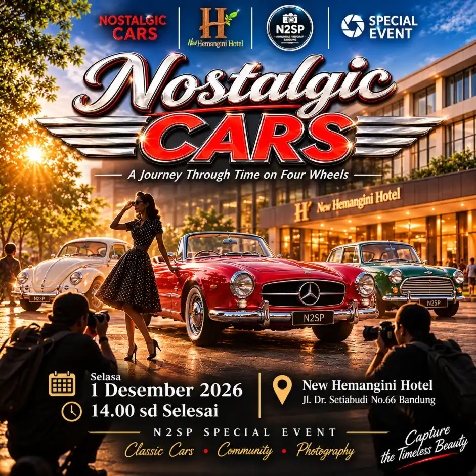

Event
N2SP Komunitas Fotografi dan New Hemangini Hotel Hadirkan Nostalgic Cars 2026

Kolaborasi antara komunitas fotografi dan industri hospitality menghadirkan pengalaman menarik melalui kegiatan Nostalgic Cars: A Journey Through Time on Four Wheels. Acara ini menjadi bagian dari N2SP Special Event yang mempertemukan dunia fotografi dengan pesona kendaraan klasik di Kota Bandung.
Menggandeng New Hemangini Hotel, N2SP (Komunitas Fotografi Bandung) menghadirkan kegiatan yang mengangkat keindahan desain dan karakter mobil klasik sebagai objek eksplorasi visual. Kolaborasi ini mempertemukan dua elemen berbeda, yaitu dunia otomotif dan kreativitas fotografi dalam satu pengalaman komunitas.
Nostalgic Cars: Perjalanan Visual Melalui Otomotif Klasik
Mobil klasik memiliki daya tarik yang tidak lekang oleh waktu. Bentuk bodi, detail eksterior, karakter desain, hingga nilai historis yang melekat pada setiap kendaraan memberikan perspektif tersendiri bagi para fotografer.
Melalui tema A Journey Through Time on Four Wheels, peserta mendapatkan kesempatan untuk mengeksplorasi berbagai sudut pengambilan gambar, komposisi, pencahayaan, serta teknik visual storytelling dengan menjadikan kendaraan klasik sebagai objek utama fotografi.
Kolaborasi N2SP dan New Hemangini Hotel
Sebagai komunitas yang bergerak dalam aktivitas fotografi, N2SP menghadirkan ruang interaksi bagi para penggemar visual untuk bertemu, berbagi pengalaman, dan mengembangkan kreativitas melalui kegiatan bersama.
Sementara itu, New Hemangini Hotel menjadi lokasi penyelenggaraan kegiatan yang memberikan latar berbeda bagi pengalaman fotografi otomotif. Kolaborasi ini menunjukkan bagaimana sebuah venue hospitality dapat menjadi bagian dari aktivitas komunitas dan ekosistem kreatif di Bandung.
Fotografi sebagai Media Dokumentasi dan Pengalaman Komunitas
Lebih dari sekadar menghasilkan gambar, fotografi dalam kegiatan ini menjadi media untuk merekam pengalaman, mengabadikan detail, dan membangun cerita visual. Setiap foto dapat merepresentasikan karakter kendaraan sekaligus suasana kegiatan yang mempertemukan para pencinta otomotif dan fotografi.
Melalui semangat Classic Cars, Community, Photography, Nostalgic Cars 2026 menjadi salah satu bentuk aktivitas kolaboratif yang memperlihatkan hubungan antara komunitas, brand, venue, dan dokumentasi visual.
Informasi Kegiatan
- Nama Acara: Nostalgic Cars – A Journey Through Time on Four Wheels
- Komunitas: N2SP – Komunitas Fotografi Bandung
- Kolaborasi Venue: New Hemangini Hotel
- Hari/Tanggal: Selasa, 1 Desember 2026
- Waktu: 14.00 WIB – Selesai
- Lokasi: New Hemangini Hotel
- Alamat: Jl. Dr. Setiabudi No. 66, Bandung
- Kategori: N2SP Special Event
Dengan menggabungkan pesona otomotif klasik dan kreativitas fotografi, Nostalgic Cars menjadi representasi aktivitas komunitas yang menghadirkan pengalaman, kolaborasi, dan cerita visual dalam satu kegiatan.
Capture the Timeless Beauty.
Baca juga: